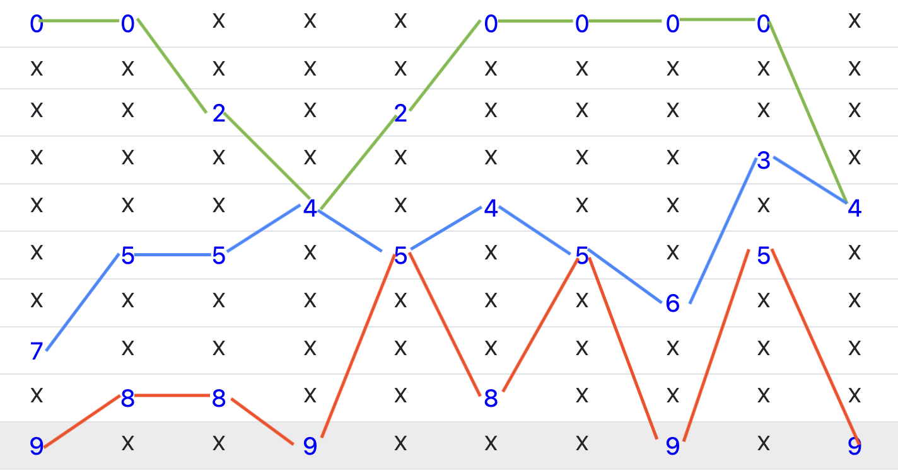

ความหมายของ Line3 parameter
เลขท้าย 3 ตัว จะมี Min Mid Max values ตัวอย่างเช่น ตัวเลข 079 Min คือ 0 Mid คือ 7 และ Max คือ 9
MinLine - ชุดของตัวเลขที่น้อยที่สุด
MidLine - ชุดของตัวเลขตรงกลาง
MaxLine - ชุดของตัวเลขค่ามากที่สุด
